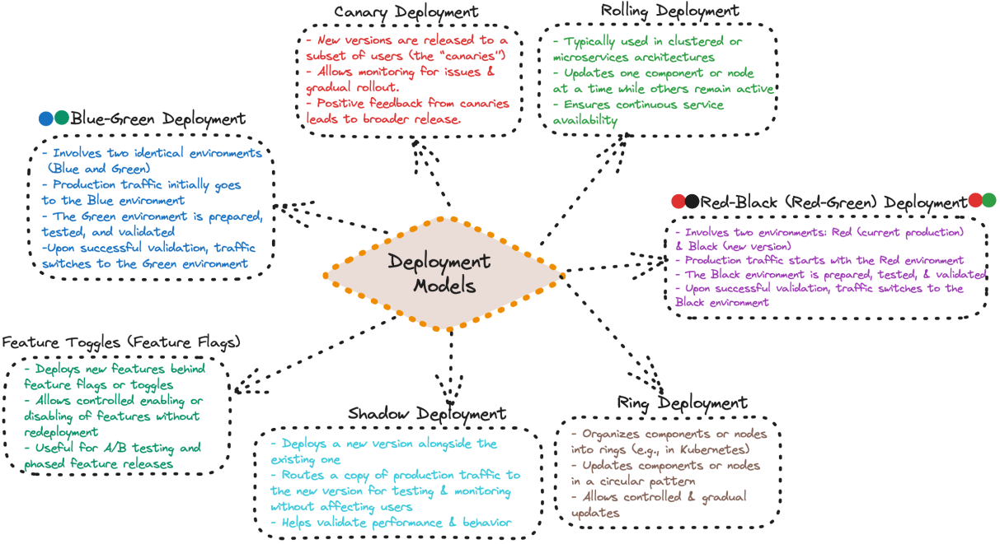
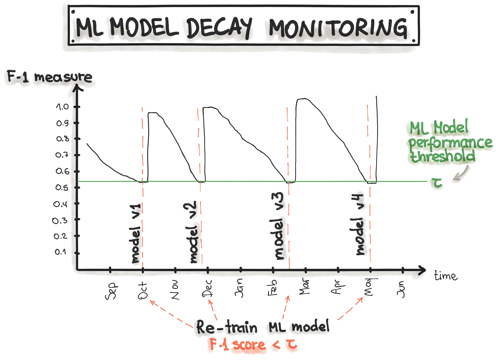
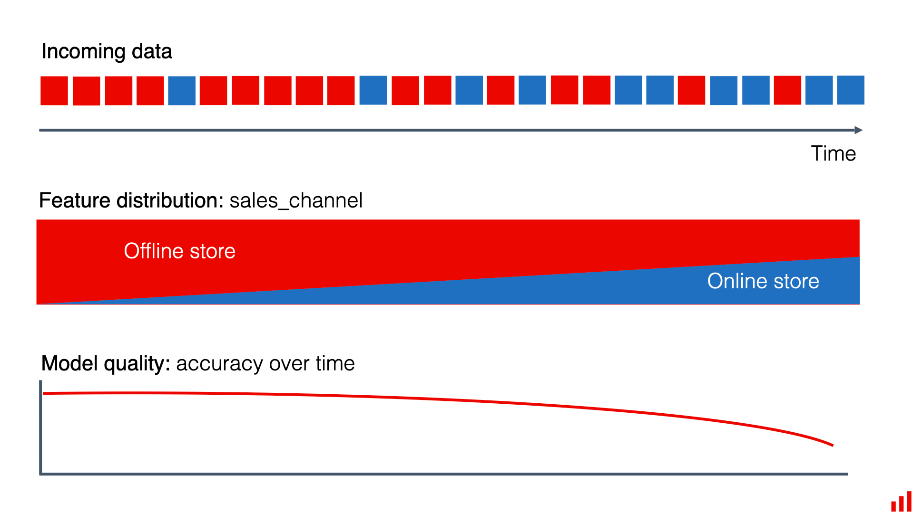

flowchart LR
request --> inference --> output
Week 5: ModelOps
Bridging the gap between model development and production to ensure scalable, reliable, and reproducible ML models
Today’s Class
Purpose
- AMA on last week’s content
- Discuss project MVP
- Provide a quick introduction to:
- Model Deployment
- Model Monitoring
Last Week’s Content
Feedback
Model Versioning & Model Deployment (part)
- Questions on content?
- How were the chapters?
- Additions (i.e. videos), edits, etc.?
- How were the quizzes?
Project MVP
Model Deployment
Pivotal stage in the machine learning lifecycle where a trained and validated model transitions from development to production.
Key Considerations
Successful deployment ensures that models operate efficiently, scale to meet demand, and integrate seamlessly with existing systems.
- Throughput (scalability)
- Latency
- Reliability
- Deployment environment
- Integration with existing systems
Throughput vs. Latency
Throughput
- Volume a system can handle within a specific timeframe.

Latency
- Speed to process a single inference request from input to output.
Throughput vs. Latency
Throughput
- How many inference requests a system can handle within a specific timeframe.
- Ex: The average number of requests the API processes and serves a second.
- Batch
- may require scoring 1M observations each week
- but may need to surge to 5M
- Real-time
- may have 1K requests per second
- but may need to surge to 5K per second
Throughput vs. Latency
Throughput
- How many inference requests a system can handle within a specific timeframe.
- Ex: The average number of requests the API processes and serves a second.
- Batch
- may require scoring 1M observations each week
- but may need to surge to 5M
- Real-time
- may have 1K requests per second
- but may need to surge to 5K per second
Latency
- Time it takes for a system to process a single inference request from input to output.
- Sum of the network I/O, serialization and deserialization, and the inference time.
- Critical in real-time applications where quick response times are essential
- Chatbot
- Fraud detection
Throughput vs. Latency
Systems that require optimal…
Throughput
…requires scalable infrastructure and parallel processing capabilities, whether through clusters or GPUs.
Latency
…require optimized and often more costly infrastructure, such as faster processors, lower network latency, and possibly edge computing to reduce the distance data needs to travel.
Throughput-Latency Tradeoff
How an ML system processes requests determines the tradeoff
Synchronous systems
Reducing latency will translate to increased throughput
- If the service takes 100 ms to process requests, this translates to a throughput of 10 requests per second.
- If the latency reaches 10 ms per request, the throughput rises to 100 requests per second.
Asynchronous systems
flowchart LR
subgraph requests[Batch requests]
direction TB
r1[request 1]
r2[request 2]
r3[request 3]
end
requests --> inference --> output
May improve throughput but at the expense of latency
- Process 20 batched requests in 100 ms, the latency is 100 ms, while the throughput is 200 requests per second.
- If you process 60 requests in 200 ms, the latency is 200 ms, while the throughput rises to 300 requests per second.
Data
The type, size, and complexity of data significantly influence throughput and latency.
- Structured, tabular data is typically lightweight, leading to relatively low latency and high throughput (easy to parallelize).
- Unstructured data like high-resolution images, videos, or lengthy text passages require more intensive computational resources, potentially increasing latency and reducing throughput.
It’s essential to align data characteristics with appropriate deployment strategies and infrastructure to balance performance and cost effectively.
Infrastructure
Infrastructure refers to the underlying hardware, software, networking, and system architecture that supports deploying and operating ML models.
- High throughput systems: Needs to be scalable, typically involving parallel processing, distributed systems, and specialized hardware like high-end GPUs.
- Low latency systems: Needs to be optimized to reduce processing time, often necessitating faster CPUs, GPUs, specialized hardware accelerators, and potentially edge computing to minimize data travel distance.
Sometimes we need to mix and match:
- Optimize throughput to enable training models on large volumes of data but
- Optimize latency during inference
Infrastructure
Questions you need to be asking:
- What throughput is required, based on minimum, average, and maximum expected demand?
- How many simultaneous requests will the system need to handle (1, 10, 1k, 1 million, etc.)?
- What are the latency requirements (e.g., 1 ms, 10 ms, 1 second)?
- How will the system scale—based on CPU load, request volume, queue size, data size, or a combination?
- What are your cost constraints?
- What type and size of data will the system process (images, text, tabular data; 100 MB, 1 GB, 10 GB)?
Inference Deployment Types
Three fundamental ML deployment architectures exist for serving models:
- Online Real-time Inference
- Asynchronous Inference
- Offline Batch Transform
Inference Deployment Types
Online Real-time Inference:
- Real-time inference involves immediate, synchronous client-server interactions through HTTP requests
- REST APIs (i.e. FastAPI) are broadly accessible but slower
- gRPC offers higher speed but requires more complex implementation
- Advantages:
- Immediate responses, suitable for interactive applications
- Simple, direct client-server communication
- Drawbacks:
- Higher infrastructure costs for maintaining low latency
- Resource underutilization during low traffic
- Challenging to scale efficiently
Inference Deployment Types
Asynchronous Inference:
- Asynchronous inference processes requests in a queue without immediate response.
- Ideal for tasks like document summarization or computationally intensive processing that can tolerate some delay.
- Examples: image tagging, document analysis & summarization, etc.
- Advantages:
- Efficiently handles traffic spikes
- Reduces infrastructure costs
- Doesn’t block the client
- Drawbacks:
- Higher latency
- Unsuitable for time-sensitive tasks
Inference Deployment Types
Offline Batch Transform:
- Processing large volumes of data simultaneously, either on a schedule or triggered manually
- Typically designed for high throughput with permissive latency requirements.
- Advantages:
- High throughput, cost-effective
- Suitable for applications tolerant of delayed predictions
- Drawbacks:
- Significant latency
- Unsuitable for real-time applications
Regardless of the design…
When prototyping our ML system for our stakeholders, it’s often beneficial to demo:
- Front-end UI to make it tangible to stakeholders
- Back-end API to serve the model
Provides clarity, aligns expectations, and builds confidence in your solution.
Strategies for Updating Prod Models
Once a model is in production, you will often need to make updates and redeploy new versions of the model.
Necessary due to:
- retraining on fresh data,
- improvements in model architecture,
- changes in business requirements, or
- performance degradation caused by data drift.
Effectively managing these updates while ensuring a smooth transition is critical to maintaining reliability and minimizing risk.
Strategies for Updating Prod Models
There are several widely used strategies to introduce new models into production while balancing performance, user experience, and operational stability:
- Canary deployment
- Blue-Green deployment
- Shadow deployment

Model Monitoring
Why?
Once deployed, ML models are exposed to new and evolving data that may differ from what they were trained on.
Without continuous monitoring, model performance can degrade, leading to inaccurate predictions and potentially costly business decisions.
Key Reasons for Model Monitoring
- Ensuring Performance Consistency
- Detecting Data Drift and Concept Drift
- Maintaining Business Value
- Ensuring Operational Stability
Types of Monitoring
- Performance Monitoring

Types of Monitoring
- Performance Monitoring
- Data Drift Monitoring

Types of Monitoring
- Performance Monitoring
- Data Drift Monitoring
- Concept Drift

Types of Monitoring
- Performance Monitoring
- Data Drift Monitoring
- Concept Drift
- Operational Monitoring
- API Latency: Response time of the model’s predictions.
- Infrastructure Load: Resource consumption (CPU, memory, GPU usage).
- Error Logs: Detecting system failures, API timeouts, or unusual error rates.
Key Components of Monitoring
A well-designed model monitoring framework consists of multiple key components that provide insights into performance, data integrity, and operational stability:
- Data logging & storage
- Model performance metrics
- Data drift detection
- Concept drift detection
- Infrastructure & API monitoring
- Automated alers & retraining triggers
Tooling
| Tool Category | Best For | Example Tools |
|---|---|---|
| Open-Source Model Monitoring | Customizable, lightweight ML monitoring | Evidently AI, WhyLabs, Fiddler AI, Arize AI |
| Cloud-Native Model Monitoring | Fully managed monitoring for cloud ML platforms | AWS SageMaker Model Monitor, Google Vertex AI Model Monitoring, Azure ML Monitoring |
| Operational Monitoring | Infrastructure, API latency, and uptime tracking | Prometheus, Grafana, Datadog, New Relic |
Model monitoring is a rapidly growing area within MLOps, with new tools and frameworks constantly emerging.
Wrapping Up
This week
- Readings
- Will go deeper into these concepts
- Introduce you to tools you can used to implement these concepts
- Walk you through example implementations
- Thursday
- Speaker: Yash Sharma on using LLMs
- When: Thursday, April 9th at 2PM
- Where: Team’s meeting
- By end of week
- Project MVP due
Looking forward
| Week | Tue | Thu | Due EOW |
|---|---|---|---|
| 5 | Model Deployment & Monitoring | Guest Speaker | Reading Quizzes, Project MVP Due |
| 6 | DevOps | Work on Final Project | Project Group Exercise & Reading Quizzes |
| 7 | Guest Speaker | No class, Final Project Due | 🥳 |
Questions or Discussion?
- Open floor for questions regarding ModelOps & model versioning.
- Discussion on how these principles apply to real-world business scenarios.
BANA 7075